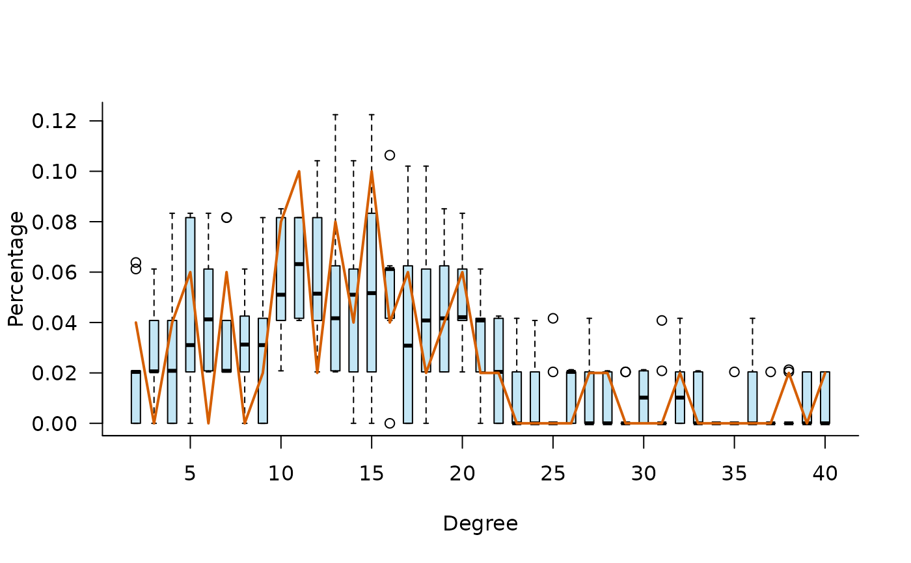

Construct an iglm Model Specification Object
iglm.RdR package iglm implements generalized linear models (GLMs)
for studying relationships among attributes in connected populations,
where responses of connected units can be dependent.
It extends GLMs for independent responses to dependent responses and can
be used for studying spillover in connected populations and other network-mediated phenomena.
It is based on a joint probability model for dependent
responses (\(Y\)) and connections \((Z)\) conditional on
predictors (X).
Usage
iglm(
formula = NULL,
coef = NULL,
coef_degrees = NULL,
sampler = NULL,
control = NULL,
name = NULL,
file = NULL
)Arguments
- formula
A model `formula` object. The left-hand side should be the name of a `iglm.data` object available in the calling environment. See
iglm-termsfor details on specifying the right-hand side terms.- coef
Optional numeric vector of initial coefficients for the structural (non-degrees) terms in `formula`. If `NULL`, coefficients are initialized to zero. Length must match the number of terms.
- coef_degrees
Optional numeric vector specifying the initial degrees coefficients. Required if `formula` includes degrees terms, otherwise should be `NULL`. Length must match `n_actor` (for undirected) or `2 * n_actor` (for directed).
- sampler
An object of class
sampler.iglm, controlling the MCMC sampling scheme. If `NULL`, default sampler settings will be used.- control
An object of class
control.iglm, specifying parameters for the estimation algorithm. If `NULL`, default control settings will be used.- name
Optional character string specifying a name for the model.
- file
Optional character string specifying a file path to load a previously saved
iglm.objectfrom disk (in RDS format). If provided, other arguments are ignored and the object is loaded from the file.
Model Formulation
The joint probability density is specified as $$f_{\theta}(y,z,x) \propto \Big[\prod_{i=1}^{N} a_x(x_i)\, a_y(y_i) \exp(\theta_g^T \mathbf{g}_i(x_i^*, y_i^*)) \Big] \times \Big[\prod_{i \ne j} a_z(z_{i,j}) \exp(\theta_h^T \mathbf{h}_{i,j}(x_i^*,x_j^*, y_i^*, y_j^*, z)) \Big],$$ which is defined by two distinct sets of user-specified features:
\(\mathbf{g}_i(x_i^*, y_i^*)= (g_i(x_i^*, y_i^*))\): A vector of unit-level functions (or "g-terms") that describe the relationship between an individual actor \(i\)'s predictors (\(x_i\)) and their own response (\(y_i\)).
\(\mathbf{h}_{i,j}(x_i^*,x_j^*, y_i^*, y_j^*, z)= (h_{i,j}(x_i^*,x_j^*, y_i^*, y_j^*, z))\): A vector of pair-level functions (or "h-terms") that specify how the connections (\(z\)) and responses (\(y_i, y_j\)) of a pair of units \(\{i,j\}\) depend on each other and the wider network structure.
This separation allows the model to simultaneously capture individual-level
behavior (via \(g_i\)) and dyadic, network-based dependencies (via \(h_{i,j}\)),
including local dependence limited to overlapping neighborhoods.
This help page documents the various statistics available in 'iglm',
corresponding to the \(g_i\) (attribute-level) and \(h_{i,j}\) (pair-level)
components of the joint model. See iglm-terms for details on specifying
all model terms via the formula interface.
References
Fritz, C., Schweinberger, M., Bhadra, S., and D.R. Hunter (2025). A Regression Framework for Studying Relationships among Attributes under Network Interference. Journal of the American Statistical Association, to appear.
Schweinberger, M. and M.S. Handcock (2015). Local Dependence in Random Graph Models: Characterization, Properties, and Statistical Inference. Journal of the Royal Statistical Society, Series B (Statistical Methodology), 7, 647-676.
Schweinberger, M. and J.R. Stewart (2020). Concentration and Consistency Results for Canonical and Curved Exponential-Family Models of Random Graphs. The Annals of Statistics, 48, 374-396.
Stewart, J.R. and M. Schweinberger (2025). Pseudo-Likelihood-Based M-Estimation of Random Graphs with Dependent Edges and Parameter Vectors of Increasing Dimension. The Annals of Statistics, to appear.
Examples
# Example usage:
# Create a iglm.data data object (example)
n_actor <- 50
neighborhood <- matrix(1, nrow = n_actor, ncol = n_actor)
xyz_obj <- iglm.data(
neighborhood = neighborhood, directed = FALSE,
type_x = "binomial", type_y = "binomial"
)
# Define ground truth coefficients
gt_coef <- c("edges_local" = 3, "attribute_y" = -1, "attribute_x" = -1)
gt_coef_pop <- rnorm(n = n_actor, -2, 1)
# Define MCMC sampler
sampler_new <- sampler.iglm(
n_burn_in = 100, n_simulation = 10,
sampler_x = sampler.net.attr(n_proposals = n_actor * 10),
sampler_y = sampler.net.attr(n_proposals = n_actor * 10),
sampler_z = sampler.net.attr(n_proposals = sum(neighborhood > 0) * 10),
init_empty = FALSE
)
# Create iglm model specification
model_tmp_new <- iglm(
formula = xyz_obj ~ edges(mode = "local") +
attribute_y + attribute_x + degrees,
coef = gt_coef,
coef_degrees = gt_coef_pop,
sampler = sampler_new,
control = control.iglm(
accelerated = FALSE,
max_it = 200, display_progress = FALSE
)
)
# Simulate from the model
model_tmp_new$simulate()
model_tmp_new$set_target(model_tmp_new$get_samples()[[1]])
# Estimate model parameters
model_tmp_new$estimate()
# Model Assessment
model_tmp_new$assess(formula = ~degree_distribution)

model_tmp_new$results$plot(model_assessment = TRUE)